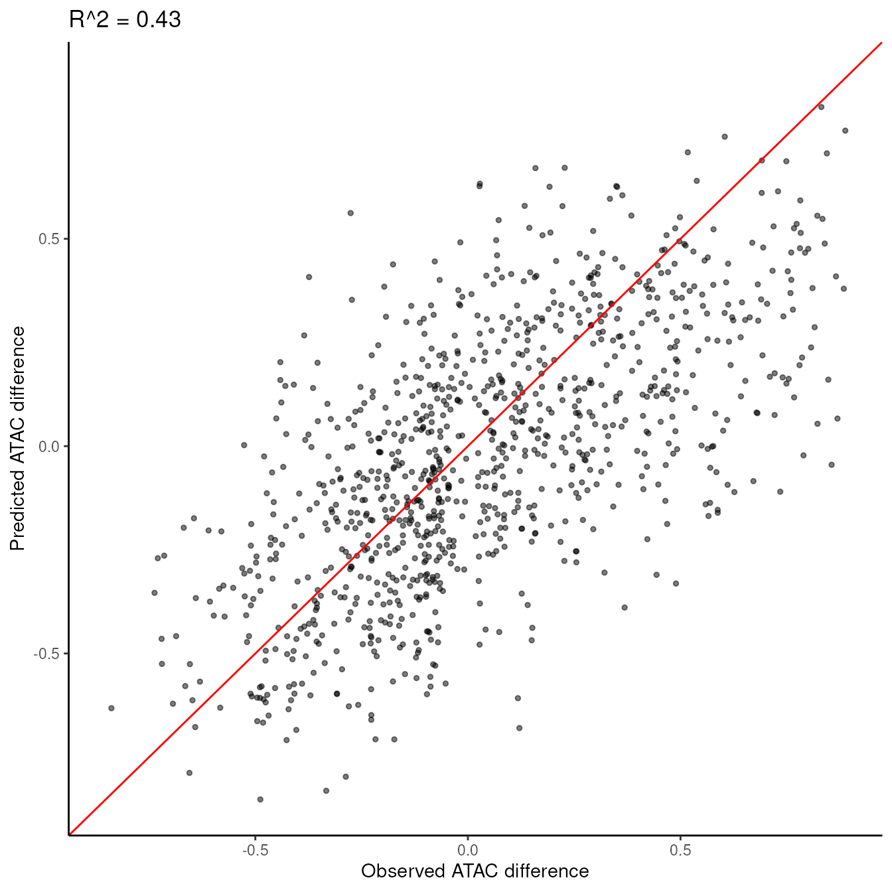

IceQream
iceqream.RmdIntroduction
IceQream (Interpretable Computational Engine for Quantitative Regression of Enhancer ATAC Motifs) is a package for regressing accessibility from DNA sequences. It models TF effective concentrations as latent variables that activate or repress regulatory elements in a nonlinear fashion, with possible contribution from pairwise interactions and synergistic chromosomal domain effects.
This vignette demonstrates how to use IceQream to analyze chromosome accessibility data, specifically focusing on a mouse gastrulation trajectory from Epiblast to Early nascent mesoderm. This analysis can help identify key regulatory elements and transcription factors involved in cellular differentiation processes, and understand quantitatively how they contribute to the observed changes in chromatin accessibility.
Setup and Data Preparation
First, let’s load the necessary packages and set up our environment:
library(misha)
library(misha.ext)
#>
#> Attaching package: 'misha.ext'
#> The following object is masked from 'package:misha':
#>
#> gtrack.create_dirs
options(timeout = 2 * 60 * 60) # allow 2 hours for loading large filesCreating a misha genome
We will start by creating a misha database for mm10 genome. If you
already have an mm10 misha database you can skip this part
and load the genome using gsetroot("path/to/mm10").
gdb.create_genome("mm10")
gsetroot("mm10")Downloading Example Data
See below for minimal instructions on how to use IceQream on your own data.
For this tutorial, we’ll use pre-prepared data from a mouse gastrulation trajectory. Let’s download and load this data:
download.file("https://iceqream.s3.eu-west-1.amazonaws.com/gastrulation-example.tar.gz", "gastrulation-example.tar.gz")
untar("gastrulation-example.tar.gz")
peak_intervals <- readr::read_tsv("gastrulation-example/peak_intervals.tsv", show_col_types = FALSE)
atac_scores <- readr::read_rds("gastrulation-example/atac_scores.rds")
additional_features <- readr::read_rds("gastrulation-example/additional_features.rds")
normalization_intervals <- readr::read_tsv("gastrulation-example/gastrulation_intervals.tsv", show_col_types = FALSE)Let’s examine the structure of our input data:
# Peak intervals
head(peak_intervals)
#> # A tibble: 6 × 6
#> chrom start end peak_name const tss_dist
#> <chr> <dbl> <dbl> <chr> <lgl> <dbl>
#> 1 chr1 3003620 3003920 1_Xkr4_3004 FALSE 211711
#> 2 chr1 3008880 3009180 1_Xkr4_3009 FALSE 206451
#> 3 chr1 3035780 3036080 1_Xkr4_3036 FALSE 179551
#> 4 chr1 3062880 3063180 1_Xkr4_3063 FALSE 152451
#> 5 chr1 3191760 3192060 1_Xkr4_3192 FALSE 23571
#> 6 chr1 3264000 3264300 1_Xkr4_3264 FALSE -48368
# ATAC scores
head(atac_scores)
#> bin1 bin2 bin3 bin4
#> 1_Xkr4_3004 0.004287514 0.005028976 0.04591491 0.02115745
#> 1_Xkr4_3009 0.016835629 0.020535310 0.01645209 0.05152993
#> 1_Xkr4_3036 0.314234571 0.351552061 0.24488575 0.21536988
#> 1_Xkr4_3063 0.302141442 0.368683558 0.14807723 0.09834478
#> 1_Xkr4_3192 0.234917748 0.159842916 0.24823286 0.40749248
#> 1_Xkr4_3264 0.057764122 0.079473969 0.05351386 0.05018866
# Additional features
head(additional_features)
#> cg_cont k4me3 k27me3 k27ac prox_bin1_punc_all spatial_ratio
#> 1_Xkr4_3004 0.6949901 0 0 0 0.2781718 4.764228
#> 1_Xkr4_3009 0.4440685 0 0 0 0.3025915 7.041941
#> 1_Xkr4_3036 1.0952665 0 0 0 0.2357028 8.936077
#> 1_Xkr4_3063 0.2247980 0 0 0 0.3126778 7.760096
#> 1_Xkr4_3192 0.9602237 0 0 0 0.6481828 5.660977
#> 1_Xkr4_3264 0.9239115 0 0 0 0.3089618 3.679446
#> TT CT GT AT TC CC GC
#> 1_Xkr4_3004 2.1875 8.181818 4.482759 2.500000 7.567568 4.615385 4.897959
#> 1_Xkr4_3009 5.0000 8.181818 3.103448 4.642857 6.216216 6.923077 4.285714
#> 1_Xkr4_3036 9.3750 4.090909 6.206897 4.642857 4.594595 2.820513 3.265306
#> 1_Xkr4_3063 4.3750 6.136364 5.517241 6.071429 7.297297 2.820513 2.653061
#> 1_Xkr4_3192 6.8750 6.363636 5.172414 8.571429 5.405405 4.358974 2.653061
#> 1_Xkr4_3264 7.5000 7.500000 4.827586 4.285714 7.297297 4.871795 3.877551
#> AC TG CG GG AG TA CA
#> 1_Xkr4_3004 3.103448 6.842105 0.9756098 7.435897 5.555556 1.111111 5.526316
#> 1_Xkr4_3009 7.241379 6.052632 0.4878049 2.051282 4.888889 4.444444 7.105263
#> 1_Xkr4_3036 4.482759 4.736842 1.2195122 6.153846 6.222222 4.814815 6.052632
#> 1_Xkr4_3063 5.172414 6.052632 0.0000000 4.102564 5.555556 4.074074 7.368421
#> 1_Xkr4_3192 4.827586 6.315789 0.9756098 2.820513 3.555556 8.518519 3.947368
#> 1_Xkr4_3264 5.517241 5.789474 1.4634146 2.564103 4.444444 3.703704 6.052632
#> GA AA
#> 1_Xkr4_3004 4.594595 2.8125
#> 1_Xkr4_3009 4.594595 2.8125
#> 1_Xkr4_3036 4.594595 4.6875
#> 1_Xkr4_3063 5.135135 7.1875
#> 1_Xkr4_3192 4.054054 6.2500
#> 1_Xkr4_3264 3.783784 3.4375The peak_intervals dataframe contains the genomic
positions of accessibility peaks. The atac_scores matrix
contains ATAC-seq signal intensities for each peak across different
stages of the trajectory. additional_features includes
extra genomic features for each peak.
Computing Motif Energies
The first step in the IceQream pipeline is to compute motif energies for each transcription factor model and each peak. This process is computationally intensive, as it calculates energies for over 20,000 motifs from various databases.
motif_energies <- compute_motif_energies(peak_intervals, motif_db, normalization_intervals = normalization_intervals)For this tutorial, we’ll use pre-computed motif energies:
download.file("https://iceqream.s3.eu-west-1.amazonaws.com/gastrulation_energies.tar.gz", "gastrulation_energies.tar.gz")
untar("gastrulation_energies.tar.gz")
motif_energies <- readr::read_rds("gastrulation_energies.rds")
motif_energies <- motif_energies[peak_intervals$peak_name, ]
print(paste("Motif energy matrix dimensions:", paste(dim(motif_energies), collapse = " x ")))
#> [1] "Motif energy matrix dimensions: 99291 x 21862"For a less memory and computationally intensive analysis, you can use the SCENIC motif clusters instead of all motifs (See Performance Considerations section).
Running IceQream
Now we’re ready to run the IceQream regression:
This takes ~25 minutes on a 40 core machine with 256GB of RAM.
traj_model <- iq_regression(
peak_intervals = peak_intervals,
atac_scores = atac_scores,
motif_energies = motif_energies,
additional_features = additional_features,
norm_intervals = normalization_intervals,
seed = 60427,
frac_train = 0.8,
max_motif_num = 30
# include_interactions = TRUE # uncomment to include pairwise interactions
)
#> ℹ Training on 79432 intervals (80%) and testing on 19859 intervals (20%)
#> ℹ Number of peaks: 79432
#> → Extracting sequences...
#> ℹ Calculating correlations between 21862 motif energies and ATAC difference...
#> ℹ Selected 1635 (out of 21862) features with absolute correlation >= 0.05
#> ℹ Running first round of regression, # of features: 1635
#> Warning in eval(family$initialize): non-integer #successes in a binomial glm!
#> Warning: glmnet.fit: algorithm did not converge
#> ℹ Taking 730 features with beta >= 0.003
#> ℹ Running second round of regression...
#> Warning in eval(family$initialize): non-integer #successes in a binomial glm!
#> Warning in eval(family$initialize): glmnet.fit: algorithm did not converge
#> ℹ Clustering 722 features into 30 clusters...
#> ℹ Choosing top 30 features clusters
#> ℹ Features left: 722
#> ℹ Learning a model for each motif cluster...
#> ℹ Infering energies...
#> ℹ Running final regression, number of features: 208
#> Warning in eval(family$initialize): non-integer #successes in a binomial glm!
#> Warning in eval(family$initialize): glmnet.fit: algorithm did not converge
#> ✔ Finished running model. Number of non-zero coefficients: 195 (out of 208). R^2: 0.320936492374457
#> → Filtering the model
#> Warning in eval(family$initialize): non-integer #successes in a binomial glm!
#> Warning in eval(family$initialize): glmnet.fit: algorithm did not converge
#> ℹ Using 7940 samples for filtering
#> ℹ R^2 of the full model: 0.304870381068192
#> ℹ Filtering features with R^2 < 5e-04 and bits < 1.75
#> Warning in eval(family$initialize): non-integer #successes in a binomial glm!
#> Warning in eval(family$initialize): glmnet.fit: algorithm did not converge
#> → R^2 added by HOCOMOCO.SOX2_MOUSE.H11MO.0.A (TTTGCAT-ACAATG-): 0.010214876242461. Bits: 8.29320883331651
#> Warning in eval(family$initialize): non-integer #successes in a binomial glm!
#> Warning in eval(family$initialize): glmnet.fit: algorithm did not converge
#> → R^2 added by JASPAR.AHL12 (----------AT---): 0.00213687369507692. Bits: 1.65174223006707
#> Warning in eval(family$initialize): non-integer #successes in a binomial glm!
#> Warning in eval(family$initialize): glmnet.fit: algorithm did not converge
#> → R^2 added by SCENIC.kznf__ZNF649_Imbeault2017_OM_RCADE (--A-CAAATGG----): 0.0217678436535326. Bits: 7.60377176500628
#> Warning in eval(family$initialize): non-integer #successes in a binomial glm!
#> Warning in eval(family$initialize): glmnet.fit: algorithm did not converge
#> → R^2 added by JASPAR.TBX15 (----GTGTGA-----): 0.00865464382093167. Bits: 5.72327601603422
#> Warning in eval(family$initialize): non-integer #successes in a binomial glm!
#> Warning in eval(family$initialize): glmnet.fit: algorithm did not converge
#> → R^2 added by SCENIC.nitta__CG13424_TTATAC20NATA_KH_NYAATTAN_m1_c3 (------TAAT-G---): 0.0114682575029625. Bits: 3.48545850992682
#> Warning in eval(family$initialize): non-integer #successes in a binomial glm!
#> Warning in eval(family$initialize): glmnet.fit: algorithm did not converge
#> → R^2 added by SCENIC.taipale_cyt_meth__NEUROG2_RNCATATGNY_eDBD (---ACCAGATGGT--): -8.86711021823028e-05. Bits: 10.3372845363353
#> Warning in eval(family$initialize): non-integer #successes in a binomial glm!
#> Warning in eval(family$initialize): glmnet.fit: algorithm did not converge
#> → R^2 added by SCENIC.cisbp__M01796 (------TGACG----): 0.000685827693068741. Bits: 2.94936162689235
#> Warning in eval(family$initialize): non-integer #successes in a binomial glm!
#> Warning in eval(family$initialize): glmnet.fit: algorithm did not converge
#> → R^2 added by SCENIC.jaspar__MA1825.1 (----AGATAAC----): 0.00441933148903156. Bits: 7.1287997711869
#> Warning in eval(family$initialize): non-integer #successes in a binomial glm!
#> Warning in eval(family$initialize): glmnet.fit: algorithm did not converge
#> → R^2 added by SCENIC.stark__RRCAGGTGB (-----CACCTGC---): 0.00191332964747049. Bits: 6.88647896962898
#> Warning in eval(family$initialize): non-integer #successes in a binomial glm!
#> Warning in eval(family$initialize): glmnet.fit: algorithm did not converge
#> → R^2 added by SCENIC.jaspar__MA0197.2 (----ATGCTAAT---): 0.00611996026844036. Bits: 7.91230055326789
#> Warning in eval(family$initialize): non-integer #successes in a binomial glm!
#> Warning in eval(family$initialize): glmnet.fit: algorithm did not converge
#> → R^2 added by SCENIC.taipale_cyt_meth__SNAI2_NRCAGGTGCA_FL (----CAGGTGC----): 0.00376007023011937. Bits: 10.3791828004863
#> Warning in eval(family$initialize): non-integer #successes in a binomial glm!
#> Warning in eval(family$initialize): glmnet.fit: algorithm did not converge
#> → R^2 added by SCENIC.taipale_tf_pairs__TBX3_AGGTGTNR_HT (----T-ACACCT---): 0.00318193986501908. Bits: 4.64639097119406
#> Warning in eval(family$initialize): non-integer #successes in a binomial glm!
#> Warning in eval(family$initialize): glmnet.fit: algorithm did not converge
#> → R^2 added by SCENIC.cisbp__M05898 (----ACAATG-----): 0.0132135939251053. Bits: 4.75857930852264
#> Warning in eval(family$initialize): non-integer #successes in a binomial glm!
#> Warning in eval(family$initialize): glmnet.fit: algorithm did not converge
#> → R^2 added by JASPAR.elt-6 (----GATA-------): 0.00271971760390771. Bits: 2.91669704301021
#> Warning in eval(family$initialize): non-integer #successes in a binomial glm!
#> Warning in eval(family$initialize): glmnet.fit: algorithm did not converge
#> → R^2 added by JASPAR.Sox11 (---ACAAAAGA----): 0.000197461414324529. Bits: 3.75346406381194
#> Warning in eval(family$initialize): non-integer #successes in a binomial glm!
#> Warning in eval(family$initialize): glmnet.fit: algorithm did not converge
#> → R^2 added by SCENIC.yetfasco__YKL043W_2153 (-----ATGCA-----): 0.000342816332406459. Bits: 3.08108415526995
#> Warning in eval(family$initialize): non-integer #successes in a binomial glm!
#> Warning in eval(family$initialize): glmnet.fit: algorithm did not converge
#> → R^2 added by SCENIC.cisbp__M00741 (-----TGGGA-----): 0.000278706539520557. Bits: 2.42111262680616
#> Warning in eval(family$initialize): non-integer #successes in a binomial glm!
#> Warning in eval(family$initialize): glmnet.fit: algorithm did not converge
#> → R^2 added by SCENIC.taipale_tf_pairs__HOXB2_TBX3_AGGTGTTAATKN_CAP (---ATTA-CAC----): 0.0034659389489981. Bits: 6.8097838250276
#> Warning in eval(family$initialize): non-integer #successes in a binomial glm!
#> Warning in eval(family$initialize): glmnet.fit: algorithm did not converge
#> → R^2 added by HOCOMOCO.ZEB1_HUMAN.H11MO.0.A (---CAGGTG------): 0.00290352228834018. Bits: 8.64245813782708
#> Warning in eval(family$initialize): non-integer #successes in a binomial glm!
#> Warning in eval(family$initialize): glmnet.fit: algorithm did not converge
#> → R^2 added by SCENIC.cisbp__M02329 (AAT-A-GGATTA---): 0.000648908199207543. Bits: 8.68016535917853
#> Warning in eval(family$initialize): non-integer #successes in a binomial glm!
#> Warning in eval(family$initialize): glmnet.fit: algorithm did not converge
#> → R^2 added by SCENIC.flyfactorsurvey__amos_da_SANGER_10_FBgn0000413 (-----CA-ATG----): 0.000799308932036946. Bits: 3.7805708379125
#> Warning in eval(family$initialize): non-integer #successes in a binomial glm!
#> Warning in eval(family$initialize): glmnet.fit: algorithm did not converge
#> → R^2 added by HOCOMOCO.SMAD4_MOUSE.H11MO.0.A (---GTG-CAGAC---): 0.00206047103146323. Bits: 7.98461506697098
#> Warning in eval(family$initialize): non-integer #successes in a binomial glm!
#> Warning in eval(family$initialize): glmnet.fit: algorithm did not converge
#> → R^2 added by SCENIC.jaspar__MA1991.1 (----CATCAAAG---): 0.00977140637292201. Bits: 6.24664802711105
#> Warning in eval(family$initialize): non-integer #successes in a binomial glm!
#> Warning in eval(family$initialize): glmnet.fit: algorithm did not converge
#> → R^2 added by SCENIC.predrem__nrMotif1082 (-----TGATAAG---): 0.000481398524669385. Bits: 10.5792425555248
#> Warning in eval(family$initialize): non-integer #successes in a binomial glm!
#> Warning in eval(family$initialize): glmnet.fit: algorithm did not converge
#> → R^2 added by SCENIC.cisbp__M01847 (----A----------): 0.000505676334101202. Bits: 1.32203583373643
#> Warning in eval(family$initialize): non-integer #successes in a binomial glm!
#> Warning in eval(family$initialize): glmnet.fit: algorithm did not converge
#> → R^2 added by HOMER.TATA_box_1 (---GTATAAAA----): 0.000518688475492746. Bits: 6.35444448999282
#> Warning in eval(family$initialize): non-integer #successes in a binomial glm!
#> Warning in eval(family$initialize): glmnet.fit: algorithm did not converge
#> → R^2 added by JASPAR.Ptf1A.MA1619.1 (----ACAGCTG----): 0.00116857773654516. Bits: 7.2900798906257
#> Warning in eval(family$initialize): non-integer #successes in a binomial glm!
#> Warning in eval(family$initialize): glmnet.fit: algorithm did not converge
#> → R^2 added by HOCOMOCO.ZIC2_MOUSE.H11MO.0.C (----GCAGGTA----): 0.00258262728552744. Bits: 7.40518992758025
#> Warning in eval(family$initialize): non-integer #successes in a binomial glm!
#> Warning in eval(family$initialize): glmnet.fit: algorithm did not converge
#> → R^2 added by SCENIC.predrem__nrMotif1713 (----GTCACA-----): 0.000148518950646881. Bits: 5.49211048247603
#> Warning in eval(family$initialize): non-integer #successes in a binomial glm!
#> Warning in eval(family$initialize): glmnet.fit: algorithm did not converge
#> → R^2 added by SCENIC.taipale_cyt_meth__NKX2-3_NCCACTTRAN_eDBD (------AAGTGG---): -0.000323268253571873. Bits: 7.05616415918813
#> ℹ Removing the following features with bits < 1.75: "JASPAR.AHL12" and "SCENIC.cisbp__M01847"
#> ℹ Trying to remove the following features with R^2 < 5e-04: "SCENIC.taipale_cyt_meth__NEUROG2_RNCATATGNY_eDBD", "JASPAR.Sox11", "SCENIC.yetfasco__YKL043W_2153", "SCENIC.cisbp__M00741", "SCENIC.predrem__nrMotif1082", "SCENIC.predrem__nrMotif1713", and "SCENIC.taipale_cyt_meth__NKX2-3_NCCACTTRAN_eDBD"
#> Warning in eval(family$initialize): non-integer #successes in a binomial glm!
#> Warning in eval(family$initialize): glmnet.fit: algorithm did not converge
#> Warning in eval(family$initialize): non-integer #successes in a binomial glm!
#> Warning: glmnet.fit: algorithm did not converge
#> → Removing "SCENIC.taipale_cyt_meth__NEUROG2_RNCATATGNY_eDBD" changed the R^2 by 0.000100842874240836
#> Warning in eval(family$initialize): non-integer #successes in a binomial glm!
#> Warning in eval(family$initialize): glmnet.fit: algorithm did not converge
#> → Removing "SCENIC.predrem__nrMotif1713" changed the R^2 by 0.000198278688010645
#> Warning in eval(family$initialize): non-integer #successes in a binomial glm!
#> Warning in eval(family$initialize): glmnet.fit: algorithm did not converge
#> → Removing "JASPAR.Sox11" changed the R^2 by 4.73828409717769e-05
#> Warning in eval(family$initialize): non-integer #successes in a binomial glm!
#> Warning in eval(family$initialize): glmnet.fit: algorithm did not converge
#> → Removing "SCENIC.cisbp__M00741" changed the R^2 by 0.000454026022275456
#> Warning in eval(family$initialize): non-integer #successes in a binomial glm!
#> Warning in eval(family$initialize): glmnet.fit: algorithm did not converge
#> → Removing "SCENIC.yetfasco__YKL043W_2153" changed the R^2 by 7.82083435941217e-05
#> Warning in eval(family$initialize): non-integer #successes in a binomial glm!
#> Warning in eval(family$initialize): glmnet.fit: algorithm did not converge
#> → Not removing "SCENIC.predrem__nrMotif1082" (changed the R^2 by only 0.000592865292567024).
#> ℹ Removed 2 features with bits < 1.75
#> ℹ Removed 6 features with R^2 < 5e-04
#> Warning in eval(family$initialize): non-integer #successes in a binomial glm!
#> Warning in eval(family$initialize): glmnet.fit: algorithm did not converge
#> ✔ After filtering: Number of non-zero coefficients: 166 (out of 176). R^2: 0.314486787088214. Number of models: 22
#> → Infering trajectory motifs on the test set
#> ℹ Extracting sequences...
#> ℹ Computing motif energies for 19859 intervals
#> ℹ Inferring the model on 19859 intervals
#> ✔ Finished IQ regression.
#>
#> Number of motifs: 22
#> R^2 train: 0.314
#> R^2 test: 0.311
#>
#> Run `plot_traj_model_report(traj_model)` to visualize the model features
#> Run `plot_prediction_scatter(traj_model)` to visualize the model predictionsLet’s examine the output:
print(traj_model)
#> <TrajectoryModel> with 22 motifs and 22 additional features
#>
#> Slots include:
#> • @model: A GLM model object. Number of non-zero coefficients: 166
#> • @motif_models: A named list of motif models. Each element contains PSSM and
#> spatial model (22 models: "HOCOMOCO.SOX2_MOUSE.H11MO.0.A",
#> "SCENIC.kznf__ZNF649_Imbeault2017_OM_RCADE", "JASPAR.TBX15",
#> "SCENIC.nitta__CG13424_TTATAC20NATA_KH_NYAATTAN_m1_c3", "SCENIC.cisbp__M01796",
#> "SCENIC.jaspar__MA1825.1", "SCENIC.stark__RRCAGGTGB",
#> "SCENIC.jaspar__MA0197.2", "SCENIC.taipale_cyt_meth__SNAI2_NRCAGGTGCA_FL",
#> "SCENIC.taipale_tf_pairs__TBX3_AGGTGTNR_HT", "SCENIC.cisbp__M05898",
#> "JASPAR.elt-6", "SCENIC.taipale_tf_pairs__HOXB2_TBX3_AGGTGTTAATKN_CAP",
#> "HOCOMOCO.ZEB1_HUMAN.H11MO.0.A", "SCENIC.cisbp__M02329",
#> "SCENIC.flyfactorsurvey__amos_da_SANGER_10_FBgn0000413",
#> "HOCOMOCO.SMAD4_MOUSE.H11MO.0.A", "SCENIC.jaspar__MA1991.1", …,
#> "JASPAR.Ptf1A.MA1619.1", and "HOCOMOCO.ZIC2_MOUSE.H11MO.0.C")
#> • @additional_features: A data frame of additional features (22 features)
#> • @coefs: A data frame of coefficients (44 elements)
#> • @model_features: A matrix of the model features (logistic functions of the
#> motif models energies, dimensions: 99291x176)
#> • @normalized_energies: A matrix of normalized energies of the model features
#> (dimensions: 99291x22)
#> • @type: A vector the length of the number of peaks, indicating whether each
#> peak is a training ('train') or a prediction peak ('test')
#> • @diff_score: A numeric value representing the difference score the model was
#> trained on (99291 elements)
#> • @predicted_diff_score: A numeric value representing the predicted difference
#> score
#> • @initial_prego_models: A list of prego models used in the initial phase of
#> the algorithm (0 models)
#> • @peak_intervals: A data frame containing the peak intervals (99291 elements)
#> • @normalization_intervals: A data frame containing the intervals used for
#> energy normalization (129963 elements)
#> • @features_r2: A numeric vector of the added R^2 values for each feature (22
#> elements)
#> • @params: A list of parameters used for training (including:
#> "energy_norm_quantile", "norm_energy_max", "min_energy", "alpha", "lambda",
#> "peaks_size", "spat_num_bins", "spat_bin_size", "distilled_features",
#> "n_clust_factor", "include_interactions", "interaction_threshold", "seed",
#> "features_bits", "r2_threshold", "bits_threshold", and "stats")
#>
#> R^2 train: 0.314
#> R^2 test: 0.311The TrajectoryModel object contains components such as
the regression model, motif models, and predicted accessibility
scores.
Visualizing Results
Let’s start with a scatter plot of observed vs. predicted accessibility changes:
plot_prediction_scatter(traj_model)
This plot shows how well our model predicts accessibility changes. Points closer to the diagonal line indicate better predictions. We measure the accuracy of the model using the coefficient of determination (R^2).
Model report
Next, let’s look at the model report, which provides detailed information about the motifs and their contributions:
plot_traj_model_report(traj_model, filename = "model_report.pdf")
knitr::include_graphics("model_report.pdf")Interpreting the trajectory model report
The model report provides several key pieces of information (from left to right):
- Motif logos show the inferred sequence preferences for each transcription factor model.
- Response curves show how the accessibility changes as a function of binding energy for each TF.
- Barplots show the coefficient of each non-linear term of every motif in the model.
- Spatial model curves show the parameters of the spatial model for each TF. The R² values indicate the predictive power each TF adds to the model.
- Spatial curves show the frequency of each TF binding site along the peaks from the bottom 10% (blue) and top 10% (red) of the differential accessibility (dAP) distribution.
- Boxplots show the distribution of ATAC differences (dAP, y-axis) for bins of binding energy (x-axis) for each TF.
Renaming the motif models
You can rename the motif models to more informative names, either
manually using rename_motif_models or automatically using
match_traj_model_motif_names:
names_map <- match_traj_model_motif_names(traj_model)
#> ℹ Matching motif names, note that this might take a while.
#> → Matching HOCOMOCO.SOX2_MOUSE.H11MO.0.A
#> → Matched with "HOMER.Tcf3", PSSM correlation = 0.603673594228002
#> → Matching SCENIC.kznf__ZNF649_Imbeault2017_OM_RCADE
#> → Matched with "HOMER.Atoh1", PSSM correlation = 0.744367794318428
#> → Matching JASPAR.TBX15
#> → Matched with "HOMER.Tbet", PSSM correlation = 0.834407709627726
#> → Matching SCENIC.nitta__CG13424_TTATAC20NATA_KH_NYAATTAN_m1_c3
#> → Matched with "HOMER.Nkx6_1", PSSM correlation = 0.851796927916711
#> → Matching SCENIC.cisbp__M01796
#> → Matched with "HOMER.Meis1", PSSM correlation = 0.735028462004868
#> → Matching SCENIC.jaspar__MA1825.1
#> → Matched with "HOMER.GATA3_2", PSSM correlation = 0.962871303313537
#> → Matching SCENIC.stark__RRCAGGTGB
#> → Matched with "HOMER.E2A_1", PSSM correlation = 0.822580786005703
#> → Matching SCENIC.jaspar__MA0197.2
#> → Matched with "HOMER.Oct2", PSSM correlation = 0.773872109199579
#> → Matching SCENIC.taipale_cyt_meth__SNAI2_NRCAGGTGCA_FL
#> → Matched with "HOMER.Myf5", PSSM correlation = 0.882764956377704
#> → Matching SCENIC.taipale_tf_pairs__TBX3_AGGTGTNR_HT
#> → Matched with "HOMER.Eomes", PSSM correlation = 0.830454466253179
#> → Matching SCENIC.cisbp__M05898
#> → Matched with "HOMER.Tcf3", PSSM correlation = 0.674102265306274
#> → Matching JASPAR.elt-6
#> → Matched with "HOMER.PQM_1", PSSM correlation = 0.884778469513962
#> → Matching SCENIC.taipale_tf_pairs__HOXB2_TBX3_AGGTGTTAATKN_CAP
#> → Matched with "HOMER.Eomes", PSSM correlation = 0.799117746197437
#> → Matching HOCOMOCO.ZEB1_HUMAN.H11MO.0.A
#> → Matched with "HOMER.NPAS2", PSSM correlation = 0.703588481032799
#> → Matching SCENIC.cisbp__M02329
#> → Matched with "HOMER.GSC", PSSM correlation = 0.74749709362038
#> → Matching SCENIC.flyfactorsurvey__amos_da_SANGER_10_FBgn0000413
#> → Matched with "HOMER.Ap4", PSSM correlation = 0.75948195144923
#> → Matching HOCOMOCO.SMAD4_MOUSE.H11MO.0.A
#> → Matched with "HOMER.TboxSmad", PSSM correlation = 0.972892483096686
#> → Matching SCENIC.jaspar__MA1991.1
#> → Matched with "HOMER.Tcf4", PSSM correlation = 0.950952629060289
#> → Matching SCENIC.predrem__nrMotif1082
#> → Matched with "HOMER.Gata1", PSSM correlation = 0.935768990334864
#> → Matching HOMER.TATA_box_1
#> → Matched with "HOMER.TATA_box", PSSM correlation = 0.864848503642247
#> → Matching JASPAR.Ptf1A.MA1619.1
#> → Matched with "HOMER.Atoh1", PSSM correlation = 0.910376349472546
#> → Matching HOCOMOCO.ZIC2_MOUSE.H11MO.0.C
#> → Matched with "HOMER.HIF2a", PSSM correlation = 0.69885878827257
names_map
#> HOCOMOCO.SMAD4_MOUSE.H11MO.0.A
#> "TboxSmad"
#> HOCOMOCO.SOX2_MOUSE.H11MO.0.A
#> "Tcf3"
#> HOCOMOCO.ZEB1_HUMAN.H11MO.0.A
#> "NPAS2"
#> HOCOMOCO.ZIC2_MOUSE.H11MO.0.C
#> "HIF2a"
#> HOMER.TATA_box_1
#> "TATA_box"
#> JASPAR.Ptf1A.MA1619.1
#> "Atoh1"
#> JASPAR.TBX15
#> "Tbet"
#> JASPAR.elt-6
#> "PQM_1"
#> SCENIC.cisbp__M01796
#> "Meis1"
#> SCENIC.cisbp__M02329
#> "GSC"
#> SCENIC.cisbp__M05898
#> "Tcf3.2"
#> SCENIC.flyfactorsurvey__amos_da_SANGER_10_FBgn0000413
#> "Ap4"
#> SCENIC.jaspar__MA0197.2
#> "Oct2"
#> SCENIC.jaspar__MA1825.1
#> "GATA3_2"
#> SCENIC.jaspar__MA1991.1
#> "Tcf4"
#> SCENIC.kznf__ZNF649_Imbeault2017_OM_RCADE
#> "Atoh1.2"
#> SCENIC.nitta__CG13424_TTATAC20NATA_KH_NYAATTAN_m1_c3
#> "Nkx6_1"
#> SCENIC.predrem__nrMotif1082
#> "Gata1"
#> SCENIC.stark__RRCAGGTGB
#> "E2A_1"
#> SCENIC.taipale_cyt_meth__SNAI2_NRCAGGTGCA_FL
#> "Myf5"
#> SCENIC.taipale_tf_pairs__HOXB2_TBX3_AGGTGTTAATKN_CAP
#> "Eomes"
#> SCENIC.taipale_tf_pairs__TBX3_AGGTGTNR_HT
#> "Eomes.2"
traj_model <- rename_motif_models(traj_model, names_map)
#> Warning in eval(family$initialize): non-integer #successes in a binomial glm!
#> Warning: glmnet.fit: algorithm did not convergeExporting the model
You can export the minimal model representation to a list of PBM in order to use infer its parameters on new data:
pbm_list <- traj_model_to_pbm_list(traj_model)
#> ℹ Computing motif energies for 22 motifs on 129963 normalization intervals
pbm_list
#> $Tcf3
#> a <PBM> object named "Tcf3" with 15 positions (`@pssm`)
#> Energy normalization max = -20.6596181864923 (`@max_energy`)
#> Spatial distribution with 149 spatial factors, from position 1 to 299 (298 bp)
#> (`@spat`)
#> Includes a model with 4 coefficients ("high-energy", "higher-energy",
#> "low-energy", and "sigmoid") (`@coefs`)
#>
#> $Atoh1.2
#> a <PBM> object named "Atoh1.2" with 15 positions (`@pssm`)
#> Energy normalization max = -22.9475694322582 (`@max_energy`)
#> Spatial distribution with 149 spatial factors, from position 1 to 299 (298 bp)
#> (`@spat`)
#> Includes a model with 4 coefficients ("high-energy", "higher-energy",
#> "low-energy", and "sigmoid") (`@coefs`)
#>
#> $Tbet
#> a <PBM> object named "Tbet" with 15 positions (`@pssm`)
#> Energy normalization max = -23.2156133367257 (`@max_energy`)
#> Spatial distribution with 149 spatial factors, from position 1 to 299 (298 bp)
#> (`@spat`)
#> Includes a model with 4 coefficients ("high-energy", "higher-energy",
#> "low-energy", and "sigmoid") (`@coefs`)
#>
#> $Nkx6_1
#> a <PBM> object named "Nkx6_1" with 15 positions (`@pssm`)
#> Energy normalization max = -25.8576300813371 (`@max_energy`)
#> Spatial distribution with 149 spatial factors, from position 1 to 299 (298 bp)
#> (`@spat`)
#> Includes a model with 4 coefficients ("high-energy", "higher-energy",
#> "low-energy", and "sigmoid") (`@coefs`)
#>
#> $Meis1
#> a <PBM> object named "Meis1" with 15 positions (`@pssm`)
#> Energy normalization max = -26.4708569246983 (`@max_energy`)
#> Spatial distribution with 149 spatial factors, from position 1 to 299 (298 bp)
#> (`@spat`)
#> Includes a model with 4 coefficients ("high-energy", "higher-energy",
#> "low-energy", and "sigmoid") (`@coefs`)
#>
#> $GATA3_2
#> a <PBM> object named "GATA3_2" with 15 positions (`@pssm`)
#> Energy normalization max = -23.612887756774 (`@max_energy`)
#> Spatial distribution with 149 spatial factors, from position 1 to 299 (298 bp)
#> (`@spat`)
#> Includes a model with 4 coefficients ("high-energy", "higher-energy",
#> "low-energy", and "sigmoid") (`@coefs`)
#>
#> $E2A_1
#> a <PBM> object named "E2A_1" with 15 positions (`@pssm`)
#> Energy normalization max = -23.7626942767039 (`@max_energy`)
#> Spatial distribution with 149 spatial factors, from position 1 to 299 (298 bp)
#> (`@spat`)
#> Includes a model with 4 coefficients ("high-energy", "higher-energy",
#> "low-energy", and "sigmoid") (`@coefs`)
#>
#> $Oct2
#> a <PBM> object named "Oct2" with 15 positions (`@pssm`)
#> Energy normalization max = -21.9576524283651 (`@max_energy`)
#> Spatial distribution with 149 spatial factors, from position 1 to 299 (298 bp)
#> (`@spat`)
#> Includes a model with 4 coefficients ("high-energy", "higher-energy",
#> "low-energy", and "sigmoid") (`@coefs`)
#>
#> $Myf5
#> a <PBM> object named "Myf5" with 15 positions (`@pssm`)
#> Energy normalization max = -21.2734614156743 (`@max_energy`)
#> Spatial distribution with 149 spatial factors, from position 1 to 299 (298 bp)
#> (`@spat`)
#> Includes a model with 4 coefficients ("high-energy", "higher-energy",
#> "low-energy", and "sigmoid") (`@coefs`)
#>
#> $Eomes.2
#> a <PBM> object named "Eomes.2" with 15 positions (`@pssm`)
#> Energy normalization max = -24.4694108890742 (`@max_energy`)
#> Spatial distribution with 149 spatial factors, from position 1 to 299 (298 bp)
#> (`@spat`)
#> Includes a model with 4 coefficients ("high-energy", "higher-energy",
#> "low-energy", and "sigmoid") (`@coefs`)
#>
#> $Tcf3.2
#> a <PBM> object named "Tcf3.2" with 15 positions (`@pssm`)
#> Energy normalization max = -24.2025571045506 (`@max_energy`)
#> Spatial distribution with 149 spatial factors, from position 1 to 299 (298 bp)
#> (`@spat`)
#> Includes a model with 4 coefficients ("high-energy", "higher-energy",
#> "low-energy", and "sigmoid") (`@coefs`)
#>
#> $PQM_1
#> a <PBM> object named "PQM_1" with 15 positions (`@pssm`)
#> Energy normalization max = -26.3286589172425 (`@max_energy`)
#> Spatial distribution with 149 spatial factors, from position 1 to 299 (298 bp)
#> (`@spat`)
#> Includes a model with 4 coefficients ("high-energy", "higher-energy",
#> "low-energy", and "sigmoid") (`@coefs`)
#>
#> $Eomes
#> a <PBM> object named "Eomes" with 15 positions (`@pssm`)
#> Energy normalization max = -23.3757910984333 (`@max_energy`)
#> Spatial distribution with 149 spatial factors, from position 1 to 299 (298 bp)
#> (`@spat`)
#> Includes a model with 4 coefficients ("high-energy", "higher-energy",
#> "low-energy", and "sigmoid") (`@coefs`)
#>
#> $NPAS2
#> a <PBM> object named "NPAS2" with 15 positions (`@pssm`)
#> Energy normalization max = -22.3049638245459 (`@max_energy`)
#> Spatial distribution with 149 spatial factors, from position 1 to 299 (298 bp)
#> (`@spat`)
#> Includes a model with 4 coefficients ("high-energy", "higher-energy",
#> "low-energy", and "sigmoid") (`@coefs`)
#>
#> $GSC
#> a <PBM> object named "GSC" with 15 positions (`@pssm`)
#> Energy normalization max = -21.2602696584225 (`@max_energy`)
#> Spatial distribution with 149 spatial factors, from position 1 to 299 (298 bp)
#> (`@spat`)
#> Includes a model with 4 coefficients ("high-energy", "higher-energy",
#> "low-energy", and "sigmoid") (`@coefs`)
#>
#> $Ap4
#> a <PBM> object named "Ap4" with 15 positions (`@pssm`)
#> Energy normalization max = -25.4779584295699 (`@max_energy`)
#> Spatial distribution with 149 spatial factors, from position 1 to 299 (298 bp)
#> (`@spat`)
#> Includes a model with 4 coefficients ("high-energy", "higher-energy",
#> "low-energy", and "sigmoid") (`@coefs`)
#>
#> $TboxSmad
#> a <PBM> object named "TboxSmad" with 15 positions (`@pssm`)
#> Energy normalization max = -22.2274175352025 (`@max_energy`)
#> Spatial distribution with 149 spatial factors, from position 1 to 299 (298 bp)
#> (`@spat`)
#> Includes a model with 4 coefficients ("high-energy", "higher-energy",
#> "low-energy", and "sigmoid") (`@coefs`)
#>
#> $Tcf4
#> a <PBM> object named "Tcf4" with 15 positions (`@pssm`)
#> Energy normalization max = -23.2648278920966 (`@max_energy`)
#> Spatial distribution with 149 spatial factors, from position 1 to 299 (298 bp)
#> (`@spat`)
#> Includes a model with 4 coefficients ("high-energy", "higher-energy",
#> "low-energy", and "sigmoid") (`@coefs`)
#>
#> $Gata1
#> a <PBM> object named "Gata1" with 15 positions (`@pssm`)
#> Energy normalization max = -21.796845898086 (`@max_energy`)
#> Spatial distribution with 149 spatial factors, from position 1 to 299 (298 bp)
#> (`@spat`)
#> Includes a model with 4 coefficients ("high-energy", "higher-energy",
#> "low-energy", and "sigmoid") (`@coefs`)
#>
#> $TATA_box
#> a <PBM> object named "TATA_box" with 15 positions (`@pssm`)
#> Energy normalization max = -23.4868203461079 (`@max_energy`)
#> Spatial distribution with 149 spatial factors, from position 1 to 299 (298 bp)
#> (`@spat`)
#> Includes a model with 4 coefficients ("high-energy", "higher-energy",
#> "low-energy", and "sigmoid") (`@coefs`)
#>
#> $Atoh1
#> a <PBM> object named "Atoh1" with 15 positions (`@pssm`)
#> Energy normalization max = -21.9391333365202 (`@max_energy`)
#> Spatial distribution with 149 spatial factors, from position 1 to 299 (298 bp)
#> (`@spat`)
#> Includes a model with 4 coefficients ("high-energy", "higher-energy",
#> "low-energy", and "sigmoid") (`@coefs`)
#>
#> $HIF2a
#> a <PBM> object named "HIF2a" with 15 positions (`@pssm`)
#> Energy normalization max = -22.8815239667432 (`@max_energy`)
#> Spatial distribution with 149 spatial factors, from position 1 to 299 (298 bp)
#> (`@spat`)
#> Includes a model with 4 coefficients ("high-energy", "higher-energy",
#> "low-energy", and "sigmoid") (`@coefs`)You can now use pbm_list.compute or
pbm_list.gextract:
new_intervals <- data.frame(
chrom = rep("chr1", 3),
start = c(3671720, 4412460, 4493400),
end = c(3672020, 4412760, 4493700)
)
pbm_list.gextract(pbm_list, new_intervals)
#> ℹ Computing energies for 22 PBMs on 3 sequences
#> chrom start end Tcf3 Atoh1.2 Tbet Nkx6_1 Meis1 GATA3_2
#> 1 chr1 3671720 3672020 0.0000000 0.000000 2.959451 3.563342 5.059834 1.4397139
#> 2 chr1 4412460 4412760 0.8123369 2.576971 2.274201 4.794199 5.748313 3.2463180
#> 3 chr1 4493400 4493700 0.0000000 0.000000 1.648011 4.081707 4.758062 0.8726075
#> E2A_1 Oct2 Myf5 Eomes.2 Tcf3.2 PQM_1 Eomes NPAS2
#> 1 0.3002728 0.0000000 0.08640897 3.081040 0.7153426 3.356748 2.3351991 0.117358
#> 2 1.6324170 0.7309488 0.00000000 3.650641 2.7716773 5.785005 2.8391810 0.000000
#> 3 0.0000000 0.0000000 0.00000000 2.635236 2.7015752 4.467654 0.3658385 1.161475
#> GSC Ap4 TboxSmad Tcf4 Gata1 TATA_box Atoh1 HIF2a
#> 1 0.000000 3.074812 0.02526963 0.5128709 0 0.0000000 3.674427 0.9382322
#> 2 0.000000 4.334416 4.33808348 6.7926238 0 0.3781309 0.000000 3.6959573
#> 3 1.080716 3.700965 0.00000000 0.0000000 0 2.0193564 0.000000 0.5780081
# directly compute on sequences
seqs <- prego::intervals_to_seq(new_intervals)
seqs
#> [1] "TTCCTCTCCTCCCCTCGCGCGCGCTCCCTCCTCCCGCAGCCTCTCCTCCACCAGCTGACTCCGAGGGAGAGGATGACCTCATCCCTTCCCTTCCAGCTGCCGCCGCTCCCACCCCGGCTGGGGAGGGGCGAGAAGGAGGGCCCGGAGGAGGGGCTGGGATTGAGGGGAGCGGCGGGTGGGGGTGCCTGGCTGGCCAGTGCTGGACGCGGAGGGCAACAGCACGGCAATCGGAGGCCCAGTCCAGGCTCGTGGGATAGCGAAGAGCGTTGAGTGGATTTCCTCGAAGCTGGGGGGATGGGA"
#> [2] "ATCTCTGGAAAGACTTGTGCTGATCTCTCTCTGCCCCTTCCTTGATTCACATCTCAAGGGACCGAGAAGGGAGGGAAAACACCAGTCCAGTATTTCCTATCAGTTCAGCGGGGCAGGAACCGGGAGCTTTTCCACAGGGCTGAGCCTGGCCCTCCACTGAGCAGTGTCTGCATTCCAAGGCTCCAGCCTGTCACCACCCTTCCAATCCCTTTGAAGCTGGGCAAAAGGCCTGCCAACAAGCACCAAACTTGAGAGCTCCTCTGCCAGCCCTGGGAGGGGCTGTTTCCTGCCTGCTTTTCG"
#> [3] "GCTCATGGCTCTCCAGACCGACCCCGAGCTCTGCTATGGCCACGGGACACGCCGCTTCCCCCGACCCTGAGGCAGGGATCGGAAGCTAGCCTGGAGATGCCCAGAGGAACTCGTAAAGCTGAGCGGGTGCTACCCTCCCGCTGCTCTCCTGGTAGACCTAACCCTTCGCCTAATCCGCGCTGGAGATCTACCCAGTGACACTGCGGGTGTCCCCCCGGGCCGCGGGGCCCTTTTCTTTATGGACGCGGCCAATGGCGAGGCGGGGGCGGACCGGACCCTAGTCCTTAGGCCCCCGCCCAG"
pbm_list.compute(pbm_list, seqs)
#> ℹ Computing energies for 22 PBMs on 3 sequences
#> Tcf3 Atoh1.2 Tbet Nkx6_1 Meis1 GATA3_2 E2A_1
#> [1,] 0.0000000 0.000000 2.959451 3.563342 5.059834 1.4397139 0.3002728
#> [2,] 0.8123369 2.576971 2.274201 4.794199 5.748313 3.2463180 1.6324170
#> [3,] 0.0000000 0.000000 1.648011 4.081707 4.758062 0.8726075 0.0000000
#> Oct2 Myf5 Eomes.2 Tcf3.2 PQM_1 Eomes NPAS2
#> [1,] 0.0000000 0.08640897 3.081040 0.7153426 3.356748 2.3351991 0.117358
#> [2,] 0.7309488 0.00000000 3.650641 2.7716773 5.785005 2.8391810 0.000000
#> [3,] 0.0000000 0.00000000 2.635236 2.7015752 4.467654 0.3658385 1.161475
#> GSC Ap4 TboxSmad Tcf4 Gata1 TATA_box Atoh1 HIF2a
#> [1,] 0.000000 3.074812 0.02526963 0.5128709 0 0.0000000 3.674427 0.9382322
#> [2,] 0.000000 4.334416 4.33808348 6.7926238 0 0.3781309 0.000000 3.6959573
#> [3,] 1.080716 3.700965 0.00000000 0.0000000 0 2.0193564 0.000000 0.5780081Performance Considerations
The computational requirements for IceQream depend on the size of your dataset. For reference, the example dataset used here (with ~100,000 peaks and ~20,000 motifs) requires about 23GB of RAM for the motif energy matrix, and will take several hours to create, depending on your hardware.
For a less memory and computationally intensive analysis, you can reduce the number of motifs used in the regression by taking a representative from the SCENIC clusters (1615) instead of all motifs (20,000+). This can be done by:
# motif_energies <- compute_motif_energies(peak_intervals, motif_db_scenic_clusters, normalization_intervals = normalization_intervals)Note that the performance of the model will be lower with fewer motifs, but it can still provide valuable insights.
Running IceQream on your own data
To run IceQream on your own data, you will need to provide the following inputs:
- Genomic positions of peaks (as a dataframe with columns
chrom,start,end,peak_name), optionally it can have aconstcolumn indicating constitutive loci. - ATAC scores (as a matrix with rows corresponding to peaks and columns corresponding to bins).
- (Optional) Additional features (as a data frame with rows corresponding to peaks and columns corresponding to features).
You can then follow the steps outlined in this vignette to compute motif energies and run the regression.